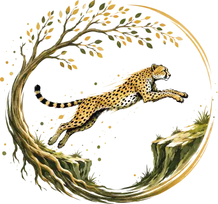
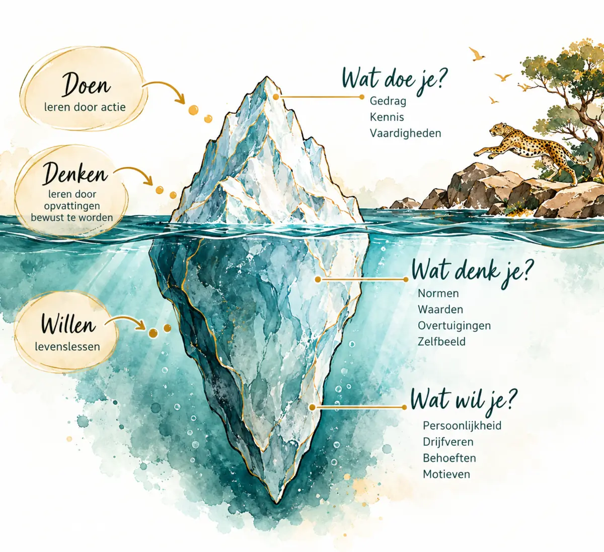
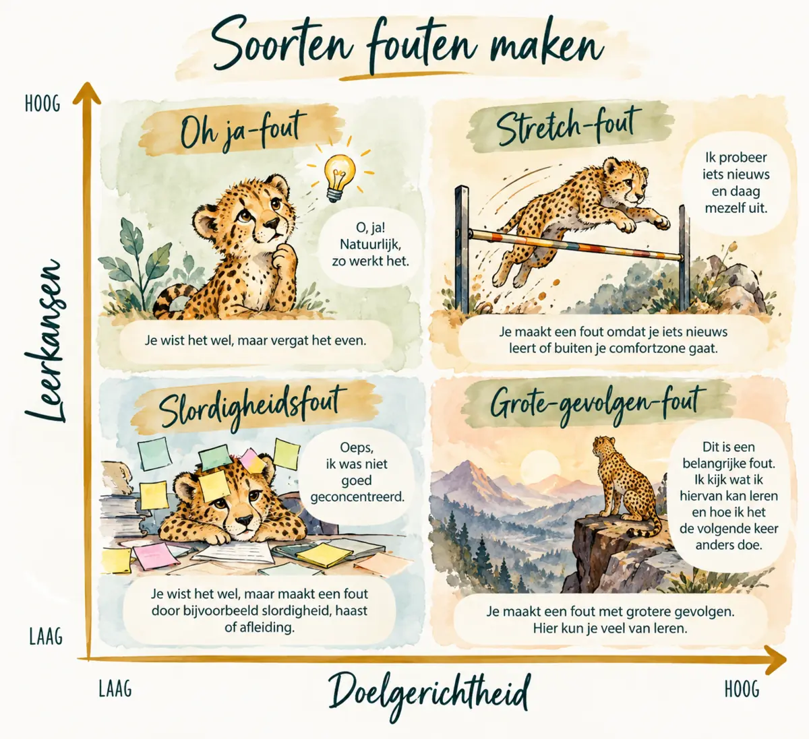
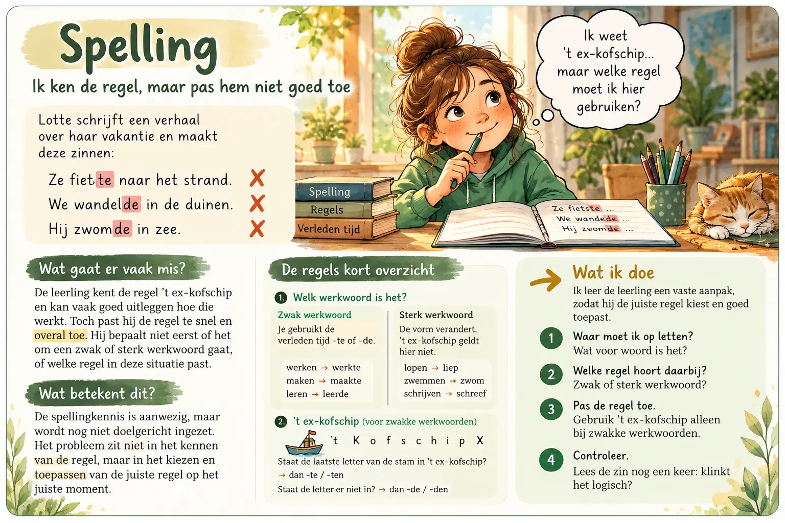
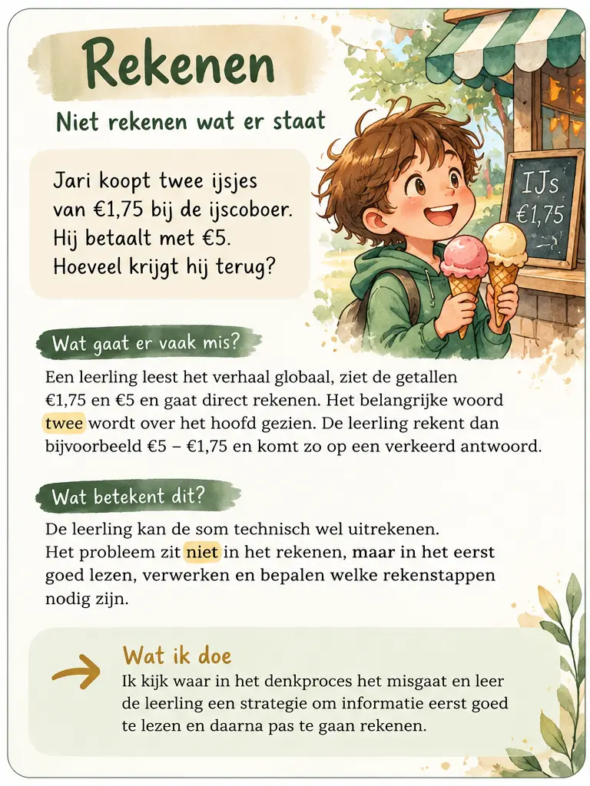
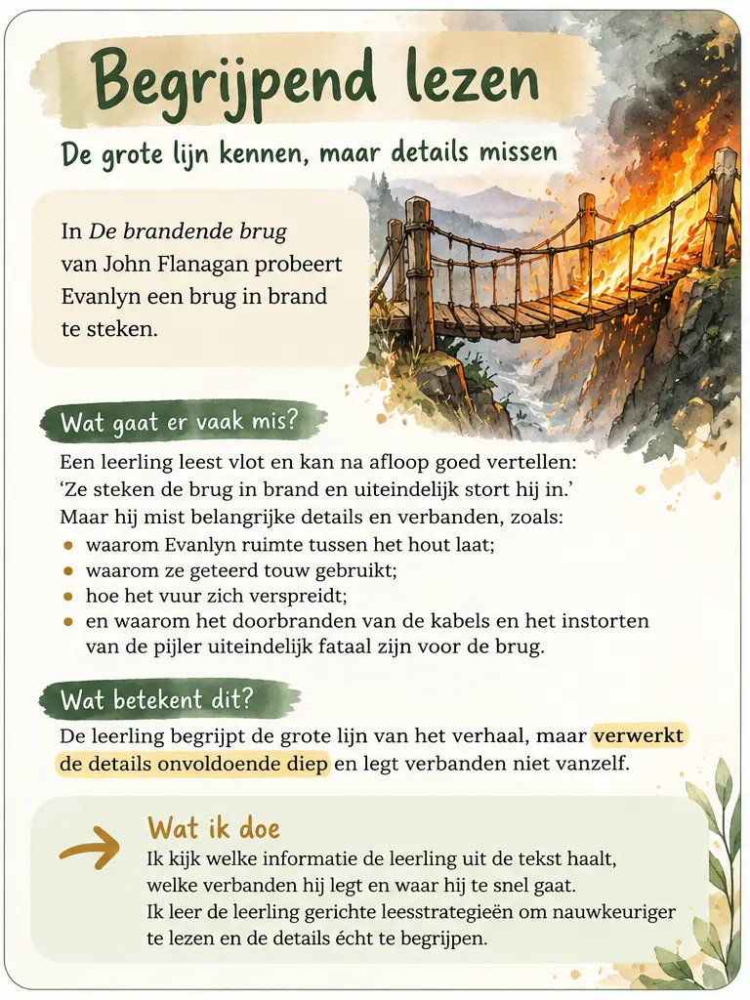

Voor slimme basisschoolleerlingen
Niet harder leren,
slimmer leren.
Soms zit er veel meer in een kind dan eruit komt. Dat kan verschillende oorzaken hebben. Samen met jouw kind ontdek ik wat in de weg zit en welke praktische strategieën weer beweging, plezier of vertrouwen geven.
Voor ongelooflijke stappen — klein én groot.
- Persoonlijk en praktisch
- Oog voor talent
- Regio Tilburg

Ervaringen
Wat ouders en kinderen ervaren
Het is gewoon gezellig. We werken hard, maar er is ook tijd voor leuke dingen. Ik weet nu ook beter waar ik op moet letten.
Onze dochter heeft na een periode van zo’n 3 maanden duidelijk vooruitgang geboekt. Vooruitgang op inhoudelijk vlak; zo heeft ze vooruitgang geboekt bij rekenen en begrijpend lezen. Daardoor is haar zelfverzekerdheid gegroeid. Maar nog belangrijker, ze heeft meer plezier gekregen in leren, waardoor ze meer vertrouwen heeft gekregen om de basisschoolperiode op het juiste niveau af te kunnen ronden”.
Een kijkje in de praktijk
Een rustige plek om te onderzoeken en te oefenen
In de begeleiding maak ik denkstappen en strategieën zichtbaar. Zo ontdekt jouw kind wat al goed gaat en waar het bij een volgende taak op kan letten.
Een eerste richting
Past deze begeleiding bij jullie vraag?
Deze keuzehulp is bedoeld voor basisschoolkinderen van wie uit onderzoek of duidelijke signalen blijkt dat zij waarschijnlijk bovengemiddeld intelligent zijn, maar dit niet altijd laten zien.
Vraag 1 van 3
Waaraan merk je dat jouw kind waarschijnlijk meer kan?
Goed om te weten: deze kenmerken kunnen een aanwijzing zijn, maar bewijzen op zichzelf geen bovengemiddelde intelligentie.
Vraag 2 van 3
Wat valt op dit moment het meeste op?
Vraag 3 van 3
Waar zou je nu het liefst mee beginnen?
Jouw mogelijke eerste stap
Begin met een persoonlijke intake
Mijn werkwijze
Van inzicht naar een aanpak die werkt
Ik kijk onderzoekend naar hoe jouw kind leert, zonder het in een hokje te plaatsen. Met gerichte observaties, humor en soms een prikkelende vraag ontdekt jouw kind zelf wat helpt. Ik gebruik talenten als vertrekpunt en oefen met haalbare stappen. Het doel van de begeleiding is dat jouw kind leert herkennen waar het vastloopt en ontdekt welke andere aanpak het kan gebruiken om verder te komen.
Individuele begeleiding
Drie fases, één persoonlijk traject
Op dit moment bied ik uitsluitend individuele begeleiding. De drie fases geven houvast, terwijl de inhoud en duur blijven meebewegen met de hulpvraag en de ontwikkeling van jouw kind.
Onderzoeken
- Telefonische kennismaking — gratis
In ongeveer 15 minuten verken ik samen met jullie de hulpvraag en bespreek ik of mijn begeleiding past.
- Intakegesprek met coach, ouders en kind — €60
Tijdens dit gesprek maken we kennis. Samen met jullie breng ik de hulpvraag, behoeften en doelen in beeld.
- Sessies 1–3: kennismaken en onderzoeken
De eerste sessie start ik met een talentinterview om fijn kennis te maken. In de twee sessies daarna onderzoek ik wat je kind al kan, waar het vastloopt en welke aanpak kansrijk is. Ik plan deze sessies het liefst kort na elkaar.
Voorbereidingswerk
Ongeveer twee weken
- Plan en voorbereiding
Ik verwerk de bevindingen, stel een persoonlijk plan op en bereid de begeleiding voor.
- Terugkoppeling aan ouders
Via e-mail ontvangen jullie een korte terugkoppeling over wat ik zie, welke doelen ik samen met jullie kies en hoe ik daarmee aan de slag ga.
Aan de slag
- Gerichte begeleiding
Je kind oefent met strategieën en kennis die aansluiten bij zijn of haar manier van denken en leren.
- Evaluatie na zeven sessies
Na zeven sessies evalueer ik samen met jullie de voortgang. Dit gesprek kan in de praktijk of online plaatsvinden.
Geen standaardpakket: het aantal begeleidingsmomenten ligt niet vooraf vast. Ik blijf samen met jullie kijken naar wat jouw kind nodig heeft.
De tarieven voor de begeleiding zijn inclusief voorbereidingstijd, planning, korte tussentijdse terugkoppelingen en schriftelijke evaluatieverslagen. De intake, begeleidingsmomenten met jouw kind, het evaluatiegesprek en eventuele gesprekken op school worden afzonderlijk in rekening gebracht. Vooraf bespreek ik altijd welke afspraken nodig zijn en welke kosten daarbij horen.
Wie ben ik
Ervaring die helpt om verder te kijken
Ik ben Maartje van Geloven en werk al ruim 25 jaar in het basisonderwijs. Daarvan werkte ik ongeveer 13 jaar bij HB-voorziening Talent, waar ik slimme leerlingen begeleidde die niet altijd lieten zien wat zij konden of waren vastgelopen in de reguliere setting.
Naast de pabo volgde ik onder andere de Montessori-opleiding aan de Hogeschool Utrecht en rondde ik de opleiding Gevorderd Talentbegeleider van Novilo met succes af. Daarnaast volgde ik diverse cursussen en trainingen op het gebied van executieve functies en vaardigheden, waaronder Speel je Vaardig, Praat & Teken en Talentenbouwers van Els Pronk en Luk de Wulf.
In mijn begeleiding combineer ik die kennis met aandacht, humor en soms een prikkelende vraag. Ik luister, observeer en onderzoek samen met het kind wat er vastloopt. Daarna zoek ik samen met het kind naar praktische strategieën die passen bij de manier waarop het denkt en leert.
“Iemand die in mij gelooft, totdat ik het zelf kan.”
- Pabo
- Gedragsspecialist
- Montessori · HU
- Gevorderd Talentbegeleider · Novilo
- Talentbouwers
- Speel je Vaardig
- Praat & Teken
om thuis verder te kunnen
Downloads
Praktische hulpmiddelen
Hier vind je gratis materialen die ouders en kinderen helpen om inzichten uit de begeleiding ook thuis toe te passen.
Downloads voor ouders 2 direct beschikbaar

Een visueel model om te bespreken wat je aan de buitenkant ziet en welke gedachten, waarden, behoeften en motieven daaronder kunnen meespelen.
Download afbeelding

Een cheeta-matrix die laat zien dat fouten verschillen in doelgerichtheid én in wat een kind ervan kan leren.
Download afbeelding
Voorbeelden uit de praktijk
Een fout vertelt niet altijd wat een kind niet kan
Een fout antwoord betekent niet automatisch dat een leerling de leerstof niet beheerst. Soms kan een kind prima rekenen, lezen of een spellingregel uitleggen, maar gaat het mis bij het verwerken van informatie, kiezen van een strategie of toepassen van aanwezige kennis.
Daarom kijk ik verder dan goed of fout. Ik onderzoek waar in het denkproces een leerling vastloopt. Pas als duidelijk is waarom iets misgaat, kan ik gericht werken aan een strategie die wél helpt.
Bekijk hieronder drie herkenbare voorbeelden. Begin bij rekenen, ga verder met begrijpend lezen en bekijk daarna hoe een leerling bij spelling een bekende regel toch verkeerd kan toepassen.
Niet méér van hetzelfde oefenen, maar ontdekken wat deze leerling nodig heeft om het zelf te kunnen.
Spelling
De regel kennen, maar hem niet goed toepassen

Bekijk grootEen leerling kent ’t ex-kofschip en kan de regel misschien zelfs foutloos uitleggen. Toch schrijft hij bijvoorbeeld:
Bij loopte heeft de leerling niet te weinig regelkennis. Integendeel: hij gebruikt een regel die hij goed kent, maar op een moment waarop die regel niet van toepassing is. Lopen is immers een sterk werkwoord: lopen – liep.
Wat gaat er vaak mis?
De leerling begint te snel met een bekende spellingregel, zonder eerst te bepalen welk soort spellingprobleem hij moet oplossen.
- De stam niet goed bepalenmaken – stam maak – maakte
- ’t ex-kofschip toepassen waar het niet hoortlopen – loopte – liep
- De regel kennen, maar een verkeerde stap zettenwerken – stam werk – werkte
leren – stam leer – leerde - Te snel op gevoel schrijvenDe regels zijn bekend, maar worden niet bewust doorlopen.
Wat betekent dit?
Een spellingfout betekent niet automatisch dat een leerling de spellingregel niet kent. Soms zit het probleem in het toepassen van de kennis: herkennen welk probleem je moet oplossen, de juiste regel kiezen, de stappen in de goede volgorde uitvoeren en het antwoord controleren.
Wat ik doe
Nóg een keer uitleggen hoe ’t ex-kofschip werkt heeft dan weinig zin. Ik wil eerst ontdekken waar in het denkproces het misgaat. Samen met de leerling bouw ik een vaste aanpak op.
Zo leert een leerling niet alleen meer spellingregels, maar vooral hoe hij de kennis die hij al heeft op het juiste moment en op de juiste manier inzet.

Bekijk grootRekenen
Niet rekenen wat er staat
Jari koopt twee ijsjes van €1,75. Hij betaalt met €5. Hoeveel krijgt hij terug?
Een leerling kan technisch prima rekenen en deze som tóch fout maken. Hij leest vluchtig, ziet €1,75 en €5 en rekent direct €5 − €1,75. Het woord ‘twee’ wordt over het hoofd gezien.
Dan zit het probleem niet in het aftrekken, maar in wat eraan voorafgaat: de informatie goed lezen, verwerken en bepalen welke rekenstappen nodig zijn.
Daarom kijk ik niet alleen naar het foute antwoord. Ik onderzoek waar in het denkproces het misgaat en leer de leerling een strategie waarmee hij dit voortaan zelf kan herkennen.

Bekijk grootBegrijpend lezen
De grote lijn kennen, maar details missen
In De brandende brug van John Flanagan probeert Evanlyn een brug in brand te steken. Een leerling die globaal leest, kan na afloop prima vertellen: ‘Ze steken de brug in brand en uiteindelijk stort hij in.’
Maar begrijpt de leerling ook waardoor dat gebeurt?
Om dat te kunnen uitleggen moet hij belangrijke details uit de tekst met elkaar verbinden: waarom Evanlyn ruimte tussen het hout laat, waarom ze geteerd touw gebruikt, hoe het vuur zich verspreidt en waarom het doorbranden van de kabels en het instorten van de pijler uiteindelijk fataal zijn voor de brug.
De leerling begrijpt dus misschien prima waar het verhaal over gaat, maar mist het diepere tekstbegrip. Ook hier kijk ik verder dan goed of fout: welke informatie haalt de leerling uit een tekst, welke verbanden legt hij en waar gaat hij te snel?
Niet méér lezen, maar leren wanneer je nauwkeuriger moet lezen.
Werkgebied
Dichtbij in Midden-Brabant
- Tilburg
- Goirle
- Riel
- Hilvarenbeek
Vrijblijvend kennismaken
Twijfel je wat jouw kind nodig heeft?
In een kort telefonisch gesprek van ongeveer 15 minuten verken ik samen met jullie de vraag. Daarna weet je of een intake of een andere stap logisch is.
Bezoek aan de praktijk is op afspraak.
Direct contact
E-mailongelooflijkcoaching@gmail.com Telefoon06 4222 89 13 LocatieGoirleRoute
Begeleiding in Goirle
De praktijk is gevestigd in Goirle. Het exacte adres ontvang je bij het maken van een afspraak.
Bekijk Goirle in Google Maps De kaart wordt geleverd door Google. Daarbij kunnen gegevens met Google worden gedeeld.